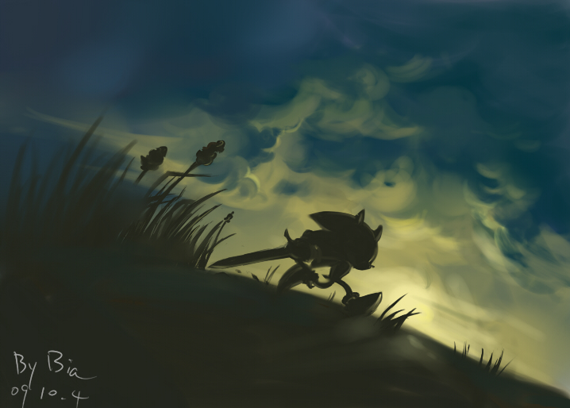

🏠 首頁
📁 同人畫作作品區
太阳，总归会出来的……【误】
👤 caicaibia
🕐 2009-10-04 08:19:34
灵感来源于SBK里那个某某平原【啥】
最近进入高原期=。=要加油了……
草是悲剧……

附件: 1231313132312.jpg
👤 orzilovepm
🕐 2009-10-04 12:50:16
不管看幾次都覺得整體色調非常吸引我... ˊuˋ
👤 farlees2275
🕐 2009-10-04 12:52:13
哇~~~
這張的效果很棒阿
我喜歡
[:smile32:]
👤 asd61816
🕐 2009-10-04 15:03:07
本文章最後由 asd61816 於 2009/10/4 11:05 PM 編輯
再大張一點就可以當桌布了(逃)
我超喜歡這種感覺得
跟懶獸大一樣
很酷![:smile42:]
👤 caicaibia
🕐 2009-10-04 16:17:16
4#
asd61816
其实因为主体画得太粗糙了所以才画弄小的OTL【我真的懒到家了】
改天俺会加工重制的……恩【啥】